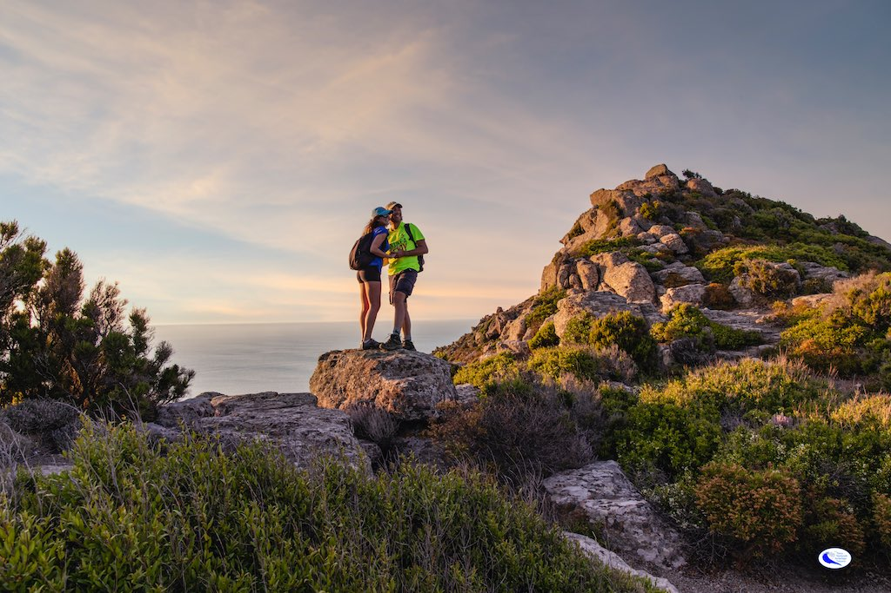
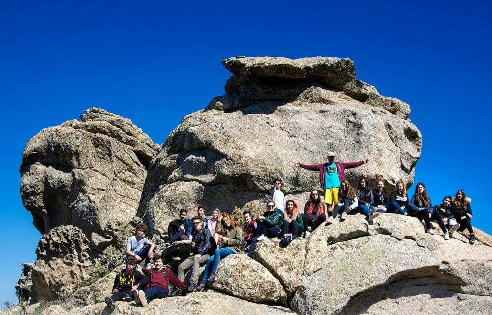
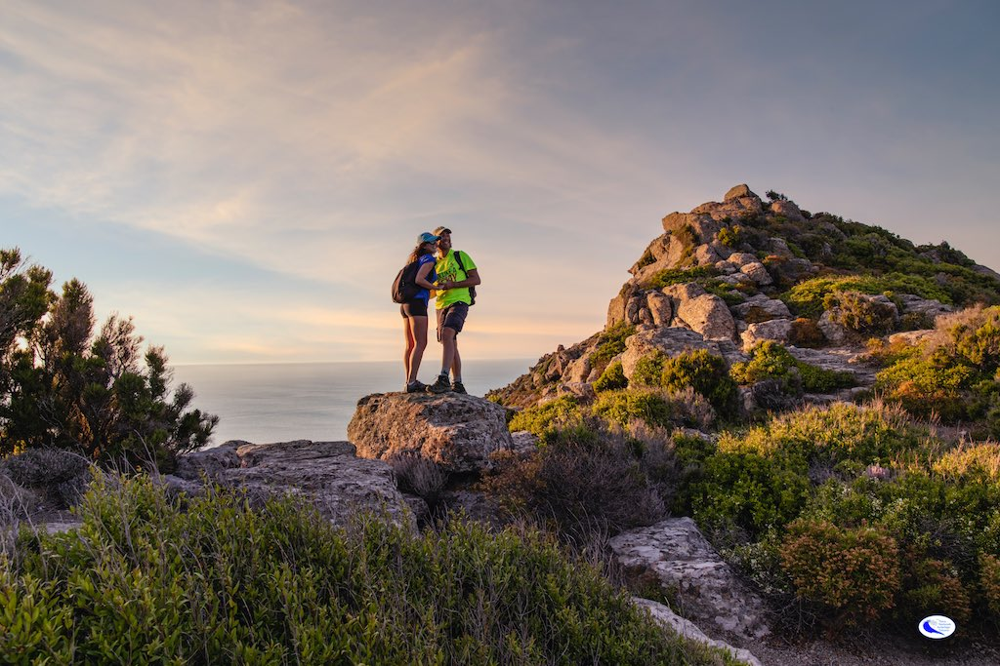
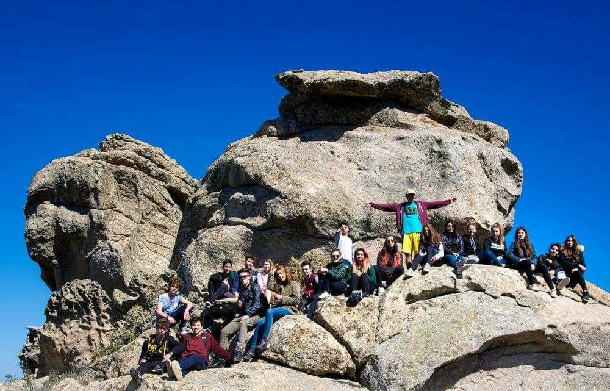

Parco Nazionale dell'Arcipelago Toscano
“Sette isole incastonate nel blu del Mediterraneo, un viaggio tra costa, cultura e natura protetta.”
Introduzione
Il Parco Nazionale dell’Arcipelago Toscano è un’area protetta che comprende le sette isole maggiori dell’arcipelago (Elba, Giglio, Capraia, Montecristo, Pianosa, Giannutri e Gorgona), oltre a numerosi isolotti minori e tratti di mare circostanti. Istituito nel 1996, rappresenta il più grande parco marino d’Europa e una delle realtà naturali più preziose dell’intero bacino del Mediterraneo. Questa porzione di mare racchiude ecosistemi costieri e terrestri di grande varietà: spiagge sabbiose, scogliere a picco, macchia mediterranea, pinete e fondali che pullulano di vita. Il fascino del Parco risiede anche nella compresenza di elementi storici e culturali che, nel corso dei secoli, hanno segnato la vita di queste isole, rendendole scrigni di biodiversità e di tradizioni millenarie.
Punti di interesse
L’Isola d’Elba, la più estesa, è famosa per la residenza di Napoleone Bonaparte durante il suo esilio, ma offre anche incantevoli spiagge e sentieri panoramici che si snodano tra i vigneti e le colline. Il Monte Capanne, con i suoi oltre mille metri di quota, regala una vista unica sulle altre isole. L’Isola del Giglio si distingue per il suggestivo porto colorato e per il borgo antico di Giglio Castello, circondato da mura medievali. Capraia, originata da antichi vulcani sottomarini, è un paradiso per gli amanti del trekking, che qui trovano sentieri affacciati su un mare turchese.
Montecristo, resa celebre dal romanzo di Dumas, è una riserva integrale accessibile solo con permessi speciali, mentre Pianosa e Gorgona, in parte sedi di istituti penitenziari, presentano ecosistemi marini eccezionalmente ben conservati. Giannutri, infine, incanta con le sue grotte e gli antichi resti romani in prossimità del mare. Ognuna di queste isole racchiude peculiarità geologiche e botaniche che attraggono ricercatori e appassionati di natura da tutto il mondo.
Attività specifiche
Le attività preferite dai visitatori del Parco Nazionale dell’Arcipelago Toscano includono lo snorkeling e le immersioni subacquee: i fondali ospitano praterie di posidonia, coralli e una straordinaria varietà di pesci, molluschi e crostacei. È possibile anche fare escursioni in barca, sia per raggiungere calette nascoste sia per osservare delfini e balenottere che talvolta transitano in queste acque.
A terra, chi ama il trekking trova numerosi percorsi ben segnalati: l’anello occidentale dell’Elba, i sentieri panoramici del Giglio e le mulattiere di Capraia rappresentano ottimi esempi di itinerari che uniscono natura e storia. Numerose anche le opportunità di praticare sport acquatici, come windsurf, kayak e vela, che consentono di apprezzare appieno la bellezza del mare toscano.
Le isole, inoltre, offrono la possibilità di scoprire borghi pittoreschi e di partecipare alle sagre locali, dove assaporare la cucina del territorio: dai piatti a base di pesce fresco fino ai vini DOC dell’Elba, la gastronomia dell’arcipelago riflette l’incontro tra mare e terra. Si possono anche organizzare visite guidate a tema geologico, con esperti che spiegano le particolari formazioni rocciose e vulcaniche, testimoni della complessa storia geologica del Mar Tirreno.
Cenni su flora e fauna
La macchia mediterranea domina molti tratti costieri, con arbusti di rosmarino, ginepro, lentisco e corbezzolo. Nei versanti più umidi trovano spazio lecci e pini, mentre le zone più elevate dell’Elba ospitano castagneti. Per quanto riguarda la fauna, è possibile osservare mufloni, cinghiali e varie specie di uccelli migratori che utilizzano le isole come tappa durante i loro spostamenti. Sulle scogliere nidificano il falco pellegrino e il gabbiano corso, specie protetta.
I fondali, ricchi di grotte e secche, costituiscono il regno di cernie, saraghi, polpi e aragoste, oltre a stelle marine di ogni forma e colore. Grazie ai programmi di conservazione messi in atto dal Parco, molte specie a rischio hanno trovato qui un rifugio sicuro e la loro popolazione sta gradualmente riprendendo vigore. È importante ricordare che, in determinate aree marine protette, la pesca è regolamentata per preservare gli equilibri dell’ecosistema.
Informazioni Utili
Per visitare il Cratere è necessario acquistare un biglietto d’ingresso, con possibilità di usufruire di visite guidate. È consigliabile prenotare online, specialmente durante l’alta stagione e nei weekend, per evitare lunghe code. Il clima può variare sensibilmente durante la giornata: d’estate fa caldo alla base del vulcano, ma è sempre meglio portare una giacca per il vento in quota. D’inverno, alcune giornate possono essere piovose e le temperature più basse, pertanto occorre abbigliamento adeguato. Il parco è accessibile da più punti, ma i più comuni sono Ercolano e Torre del Greco: da qui partono bus navetta che portano i visitatori fino alle quote più alte.
Per chi utilizza l’auto, è necessario fare attenzione alle restrizioni di parcheggio lungo la strada che sale al Vesuvio. Sul piano della sicurezza, è bene ricordare che il vulcano è attivo, seppure in stato di quiescenza, quindi si raccomanda di seguire le indicazioni delle autorità competenti e di non abbandonare i sentieri segnalati. La fruizione responsabile del Parco Nazionale del Vesuvio permette di coniugare la scoperta di un patrimonio naturalistico e culturale di enorme valore con l’emozione di salire su uno dei vulcani più celebri al mondo, scenario di leggende, opere letterarie e studi scientifici fin dall’antichità.
Una menzione speciale va fatta per il ricco patrimonio archeologico che circonda l’area, poiché la storia del Vesuvio è indissolubilmente legata alle vicende di Pompei ed Ercolano. Percorrendo i sentieri del parco, ci si trova spesso di fronte ad antichi muretti a secco e terrazzamenti utilizzati per la coltivazione della vite e di altre piante, una pratica agricola tramandata da generazioni che rende il paesaggio rurale un vero mosaico di tradizioni. Gli enti locali promuovono iniziative di educazione ambientale, rivolte soprattutto alle scuole, per sensibilizzare i più giovani sul valore della biodiversità e della prevenzione dei rischi naturali.
La convivenza con un vulcano attivo richiede infatti piani di emergenza e una costante attività di monitoraggio, gestita dall’Osservatorio Vesuviano. La presenza di tali controlli garantisce un equilibrio tra la salvaguardia delle persone e la protezione di un ecosistema la cui vitalità è alimentata dal fuoco sotterraneo. In qualunque stagione si scelga di visitarlo, il Parco Nazionale del Vesuvio offre scorci unici e un innegabile senso di contatto con le forze primigenie della terra, invitando al rispetto di un territorio fragile eppure straordinariamente fecondo, dove la natura e la storia dell’uomo sono da secoli legate a doppio filo.

 


